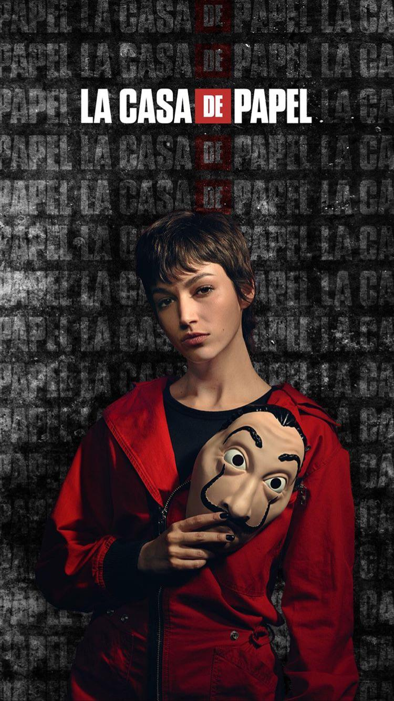

டோக்கியோ:
டோக்கியோ (Silene Oliveira) என்பது நெட்ஃபிக்ஸ் தொடரான மனி ஹீஸ்டில் உள்ள ஒரு கற்பனையான பாத்திரம், இது Úrsula Corberó ஆல் சித்தரிக்கப்பட்டது.[1] இந்தத் தொடரின் உண்மையான கதாநாயகி, அவள் நம்பமுடியாத கதைசொல்லி[2] மற்றும் தப்பியோடிய கொள்ளைக்காரன், பேராசிரியரின் திருட்டுகளில் பங்கேற்பதற்காக அவர் தேடினார்.
டோக்கியோ ஒரு இளம் திருடன், ஒரு தோல்வியுற்ற கொள்ளைக்குப் பிறகு காவல்துறையினரிடமிருந்து தப்பி ஓடுகிறார், அதில் அவரது காதலன் கொல்லப்பட்டார். அவள் திருட்டில் ஈடுபடுவதற்கு முன்பு அவளுடைய தாய் அவளை காவல்துறையிடம் ஒப்படைக்க முயன்றாள், ஆனால் பின்னர் மன அழுத்தத்தால் மாரடைப்பால் இறந்தாள். மாட்ரிட்டில் உள்ள ராயல் மின்ட் திருட்டைச் செய்வதற்கு பேராசிரியரால் அவர் பணியமர்த்தப்பட்டார். திருட்டுக்கு தேர்ந்தெடுக்கப்பட்ட மற்ற ஏழு கொள்ளையர்களுடன் சேர்ந்து, அவள் ஒரு ஒதுக்குப்புற வில்லாவிற்கு அழைத்துச் செல்லப்படுகிறாள், அங்கு அவர்கள் ஐந்து மாதங்களுக்கு கொள்ளையடிக்க திட்டமிடுகிறார்கள். பேராசிரியை ஒவ்வொரு கொள்ளையர்களிடமும் கொள்ளையடிக்கும் போது அவர்களின் அடையாளத்தை மறைக்க நகரத்தின் பெயரைத் தேர்வு செய்யச் சொல்கிறார், அவள் டோக்கியோவைத் தேர்ந்தெடுக்கிறாள். டோக்கியோ ஒரு சுறுசுறுப்பான மற்றும் கலகக்கார பாத்திரம், அவள் ரியோவுடன் ஒரு உறவைக் கொண்டிருக்கிறாள், அது முதல் திருட்டு முழுவதும் நின்று தொடங்குகிறது. நைரோபியுடன் அவள் நல்ல நட்பைப் பகிர்ந்து கொள்கிறாள், இருவரும் பலமுறை குடித்துவிட்டு வந்திருக்கிறார்கள். என்ன செய்ய வேண்டும் என்று கூறுவது அவளுக்குப் பிடிக்கவில்லை மற்றும் முதல் தொடரில் பேர்லினுக்கு வெறுப்பைக் காட்டுகிறது.